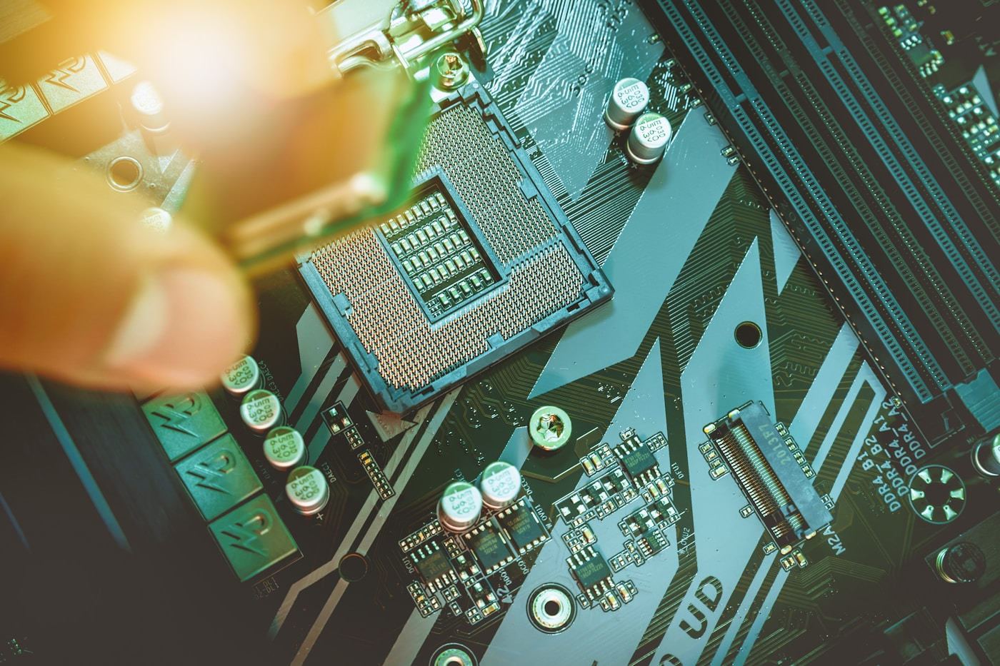
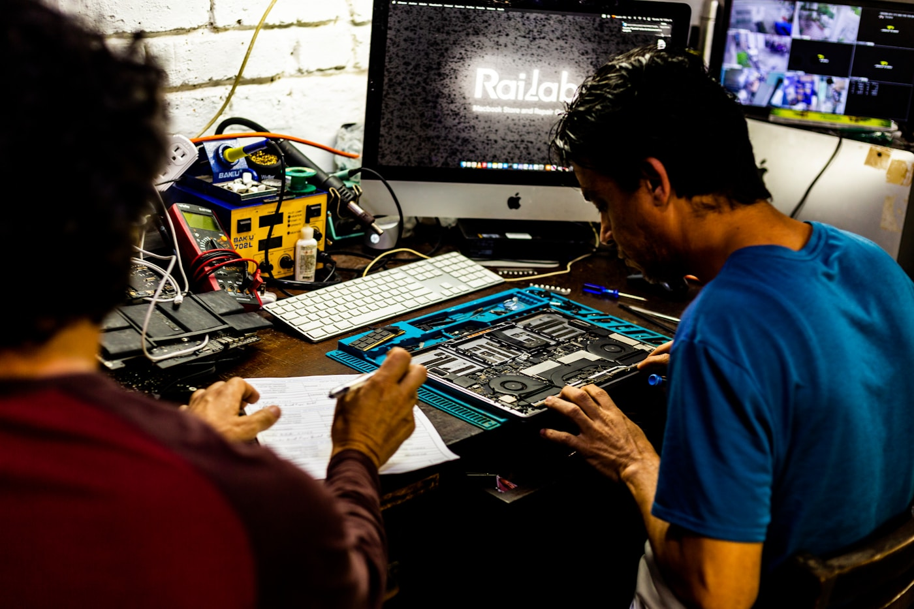
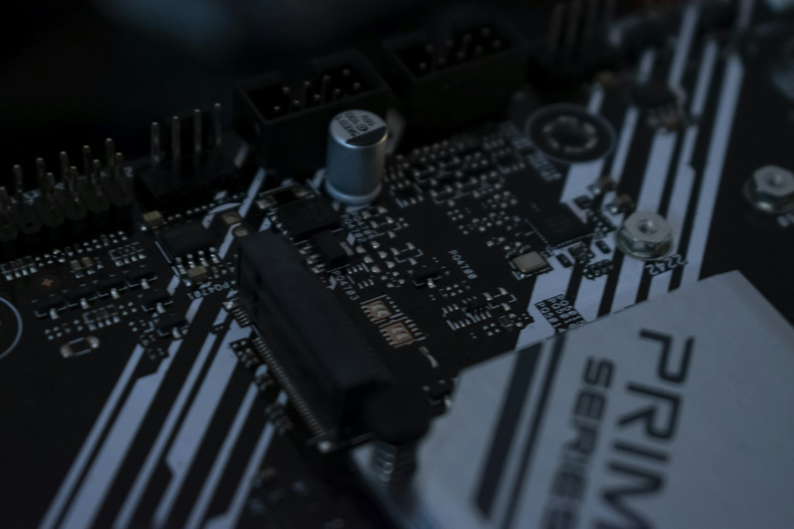

Intake inspection
Overheating marks, damaged components, connector condition, corrosion, and prior repair traces.
GPU service protocol / Rev. 24.05
Diagnostics and restoration for graphics cards with a clear technical workflow: from intake inspection to load testing under controlled conditions. No marketing noise, just verifiable steps and transparent repair logic.

01 / Symptoms matrix
This table helps separate software issues from symptoms that usually require power measurements, memory testing, and board inspection under magnification.
| Symptom | Likely area | Initial check | Status |
|---|---|---|---|
| Artifacts, colored blocks, or lines | VRAM, GPU, memory solder joints | Memory test, thermal profile | Bench check |
| No image while fans spin up | BIOS, core power, PCIe circuits | POST card, voltage rail readings | Pending |
| Shutdown under load | VRM, overheating, power degradation | OCCT/FurMark, current monitoring | Critical |
| Noise, overheating, throttling | Cooling system | Disassembly, thermal interface replacement | Routine |
02 / Diagnostic protocol
The card is checked in sequence: visual inspection, input resistance measurements, bench startup, thermal imaging, memory testing, and load testing. Repair decisions are made only after measurements.
Overheating marks, damaged components, connector condition, corrosion, and prior repair traces.
PCIe power, VRM, and resistance measurements for the core, memory, and auxiliary lines.
Startup, VRAM testing, driver stability, and repeated load runs under observation.

03 / Repair scope
The repair scope is based on the diagnostic results: from cooling service to power circuit restoration and confirmed memory work.
Heatsink cleaning, thermal paste replacement, thermal pad replacement, and mounting pressure checks.
Diagnostics of the VRM, MOSFETs, controllers, inductors, and input protection components.
VRAM testing, error localization, and chip replacement when the defect is confirmed.
Checks of HDMI/DP ports, PCIe contacts, control lines, and damaged board traces.

04 / Validation
05 / Timing
Inspection, measurements, bench startup, and preliminary findings.
Cooling service, connectors, and common power components when parts are available.
VRAM faults, trace damage, repeated validation, and compatible chip selection.
06 / FAQ
An accurate estimate is given after diagnostics. Before measurements, only a range is possible: cooling service is usually simpler, while power and memory issues require bench testing.
Yes, if the board has no critical GPU damage or multiple cascading defects. The decision depends on memory condition, power circuits, and the cooling system.
Overheating is often a symptom, not the root cause. Mounting pressure, thermal pads, fan speed, and power stability also need to be checked.
Ready for inspection